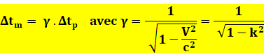
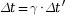
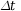
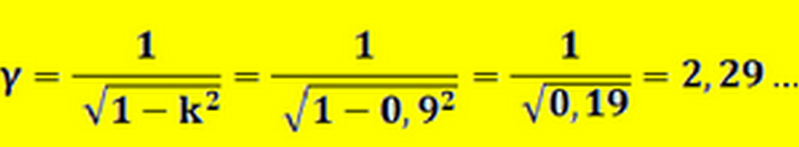

Introduction
La relativité restreinte est une théorie formelle élaborée par Albert Einstein en 1905 en vue d’expliquer des phénomènes physiques qui apparaissent lorsque des objets se déplacent à une vitesse proche de la vitesse de la lumière (~299 792 458 m/s). Pour que cette théorie fonctionne,il faut qu’elle obéisse à quelques lois. Les phénomènes physiques sont les mêmes dans tous les systèmes en translation uniforme l'un par rapport à l'autre(pour simplifier). En particulier, dans tout repère galiléen, la lumière dans le vide a toujours la même valeur dans toutes les directions.
1/Comment ça marche ?
La relativité restreinte, a peut être un nom compliqué ou du moins il paraît comme tel, mais sachez que cette théorie est très simple. Nous savons que plus nous allons vite, plus le temps diminue… Par exemple, quand on est dans un TGV (train à grande vitesse) qui roule à 300km/h le temps ralentit, certes de millièmes de secondes mais il ralentit tout de même. La relativité restreinte est la version à grande échelle “géante” de cette exemple. Au lieu que cette vitesse soit de 300km/h, il faudrait qu’elle soit, comme dit juste avant, environ, égale à celle de la célérité, soit ~300 000km/s soit beaucoup plus que la vitesse maximal d’un train actuellement. Il faut savoir que la fusée la plus rapide actuellement est Apollo 13 avec une vitesse maximale de 40000km/h soit ~0.0037% de la vitesse de la lumière, nous sommes très loin encore des 100%. CALCUL : 40000 km/h en k/s = 11111.11 ensuite 11.111111/300000 = 0.00370370366
2/Avantages et inconvénients
Cette théorie a des avantages comme des inconvénients… Tout d’abord, les avantages sont nombreux : la vieillesse ralentit, les battements de coeur aussi, la vitesse des autres objets aussi, le voyage dans le futur… Tous ces avantages permettraient de voyager dans le temps car nous vivrions plus longtemps et donc de vivre 20 ans au lieu de 50 ans. Mais cette théorie n’a pas que des avantages loin de la… Comme vous avez pu le remarquer, atteindre une vitesse de 300 000km/s n’est pas simple et demande beaucoup d’énergie que l’on ne dispose pas actuellement, aussi il faut qu’elle suive les lois de la physique très contraignante (cette théorie utilise la métrique Minkowski).
3/Formule
Voici la formule de la relativité restreinte permettant de calculer la différence de temps entre le temps passer sur terre d’une personne observatrice et un train allant à 95% de la vitesse de la lumière faisant une grande ligne droite, nommé facteur de Lorentz.


ou Δtm = y .ΔtpOn appelle temps propre un intervalle de temps mesuré dans un référentiel entre deux événements qui se produisent en un même lieu dans le référentiel .
 est ainsi le temps propre mesuré dans (R’).
est ainsi le temps propre mesuré dans (R’).

est nommé temps impropre, dans le sens où c’est un temps mesuré dans un référentiel où les deux événements ne se produisent pas au même endroit. Avec 1 comme constante V2 = vitesse au carré c2 = célérité au carréOn remplace, ce qui donne :

On observe que plus la valeur V se rapproche de la valeur C plus Y (gamma) est grand. Ici, si le train roule pendant 1 min, l’observateur aura passer quand a lui 2.29 min. A plus grande échelle , si il roule pendant 1 an dans le train, l’observateur aura vécu environs 23 années. Pour passer de 1 min à une année : il y a 525600 min en 1 année donc on fait : 2.29*525600= 22.8825855513. Ceci est un des avantages de la relativité restreinte non négligeable.
Conclusion
Nous pouvons en conclure que la relativité restreinte est actuellement impossible par cause de moyen technique et de ressource et que donc cette théorie ne permet pas de voyager dans le temps. D'où le nom de notre problématique “Pourquoi le voyage dans le temps est imaginable mais impossible”. Mais il est fort probable que les futures générations arrivent à réussir à voyager dans le temps avec des connaissances et des techniques nettement supérieur à celle actuelle. Nous pourrons,malheureusement, surement,ne pas connaître le voyage dans le futur. Nous allons donc voir l’amélioration de la relativité restreinte qui n'a plus pour trajectoire un mouvement rectiligne uniforme mais des chutes libres qui se nomme “relativité générale”.